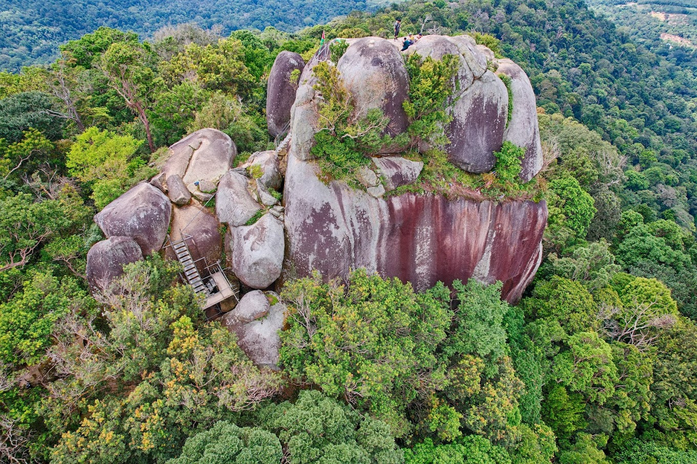

Negeri Sembilan
Negeri Sembilan, located on the southwestern coast of Peninsular Malaysia, is a state known for its rich cultural heritage, traditional customs, and picturesque landscapes. Its name translates to "Nine States" in Malay, reflecting its historical formation from nine districts. Negeri Sembilan is famous for its unique Minangkabau architecture, delicious cuisine, and vibrant cultural festivals.
Attractions

Gunung Datuk
Gunung Datuk, also known as Mount Datuk, is a popular hiking destination located in Negeri Sembilan, Malaysia. Rising to an elevation of approximately 880 meters (2,887 feet), Gunung Datuk offers breathtaking panoramic views of the surrounding landscape and is a favorite among hiking enthusiasts.The hike to the summit of Gunung Datuk is considered moderately challenging........
71350 Kota, Negeri Sembilan
Open all day
71350 Kota, Negeri Sembilan
Open all day

Port Dickson Beaches
Port Dickson, often referred to as PD, is a coastal town in Negeri Sembilan, Malaysia, renowned for its pristine beaches and laid-back atmosphere. Situated along the west coast of Peninsular Malaysia, Port Dickson is a popular weekend getaway destination for both locals and tourists seeking sun, sand, and sea.The beaches of Port Dickson boast soft, golden sands, gently lapping waves, and........
Port Dickson Beaches, Negeri Sembilan
Open all day
Port Dickson Beaches, Negeri Sembilan
Open all day

Galeri Diraja Tuanku Ja'afar
Galeri Diraja Tuanku Ja'afar, located in Seremban, Negeri Sembilan, is a museum dedicated to showcasing the rich heritage and cultural legacy of the state's royal family. Named after Tuanku Ja'afar, the tenth Yang di-Pertuan Besar (ruler) of Negeri Sembilan and the tenth Yang di-Pertuan Agong (King) of Malaysia, the gallery offers visitors a fascinating glimpse into the history.......
Jalan Taman Bunga, Taman Tasek Seremban, 70100 Seremban, Negeri Sembilan
10:00a.m – 04:30p.m
Jalan Taman Bunga, Taman Tasek Seremban, 70100 Seremban, Negeri Sembilan
10:00a.m – 04:30p.m